GAN_P3¶
虽然说已经有 WGAN，但其实并不代表说，GAN 就一定特别好 Train，GAN 仍然是以很难把它 Train 起来而闻名的，那为什么 GAN 很难被 Train 起来？
它有一个本质上困难的地方
- Discriminator 做的事情，是要分辨真的图片跟产生出来的，也就是假的图片的差异
- 而 Generator 在做的事情，它是要去产生假的图片，骗过 Discriminator
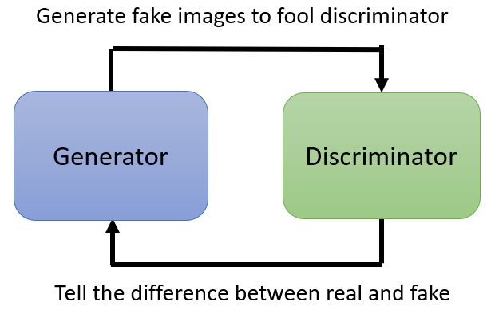
而事实上这两个 Network，这个 Generator 跟 Discriminator，它们是互相砥砺，才能互相成长的，只要其中一者发生什么问题停止训练，另外一者就会跟着停下训练，就会跟着变差
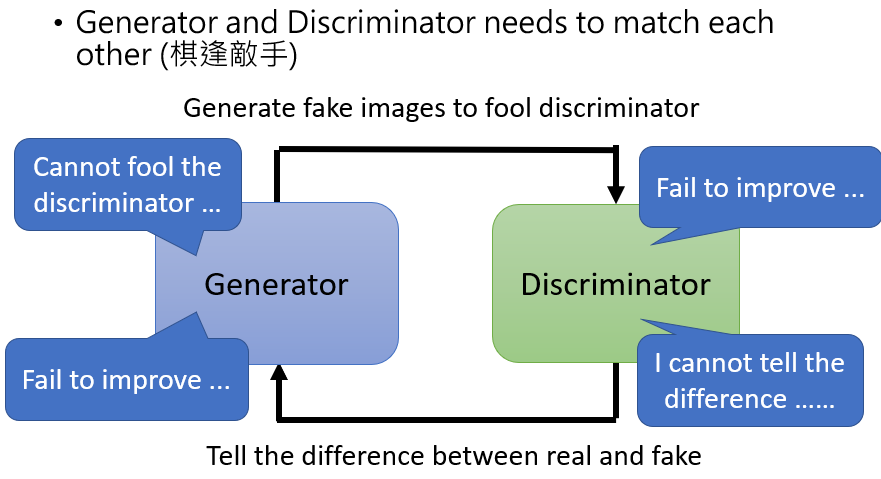
-
假设你在 Train Discriminator 的时候，一下子没有 Train 好
-
你的 Discriminator 没有办法分辨真的跟产生出来的图片的差异
-
那 Generator 就失去了可以进步的目标，Generator 就没有办法再进步了
-
如果 Generator 没有办法再进步，它没有办法再产生更真实的图片，那 Discriminator 就没有办法再跟着进步了
但是到目前为止，大家已经 Train 过了很多次的 Network，我们没有办法保证 Train 下去，它的 Loss 就一定会下降，你要让 Network Train 起来，往往你需要调一下 Hyperparameter，才有可能把它 Train 起来
那今天这个 Discriminator 跟 Generator，它们互动的过程是自动的，因为我们不会在中间每一次 Train Discriminator 的时候，你都换 Hyperparameter
所以只能祈祷每次 Train Discriminator 的时候，它的 Loss 都是有下降的，那如果有一次没有下降，那整个 Training，很有可能就会变就会惨掉，整个 Discriminator 跟 Generator，彼此砥砺的这个过程，就可能会停下来
所以今天 Generator 跟 Discriminator，在 Train 的时候，它们必须要棋逢敌手，任何一个人放弃了这一场比赛，另外一个人也就玩不下去了
因此 GAN 本质上它的 Training 仍然不是一件容易的事情，当然它是一个非常重要的技术，所以虽然它是一个前瞻的技术
一些相关的，跟 Train GAN 的诀窍有关的文献，还有链接列在这边，其实就给大家自己参考
- Tips from Soumith
- Tips in DCGAN: Guideline for network architecture design for image generation
- Improved techniques for training GANs
- Tips from BigGAN
GAN for Sequence Generation¶
Train GAN 最难的其实是要拿 GAN 来生成文字
如果你要生成一段文字，那你可能会有一个，Sequence To Sequence 的 Model，你有一个 Decoder
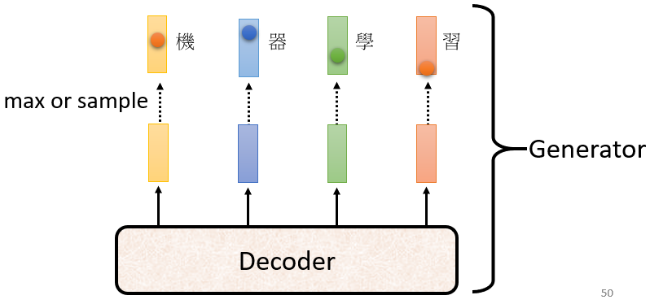
那这个 Decoder 会产生一段文字，那我们现在这个，Sequence To Sequence 的 Model 就是我们的 Generator，这个在过去，在讲 Transformer 的时候，这是一个 Decoder，那它现在，在 GAN 里面，它就扮演了 Generator 的角色，负责产生我们要它产生的东西，比如说一段文字
那你说这个会跟原来的 GAN，在影像上的 GAN 有什么不同？就最 High Level 来看，就演算法来看，可能没有太大的不同，因为接下来，你就是训练一个 Discriminator
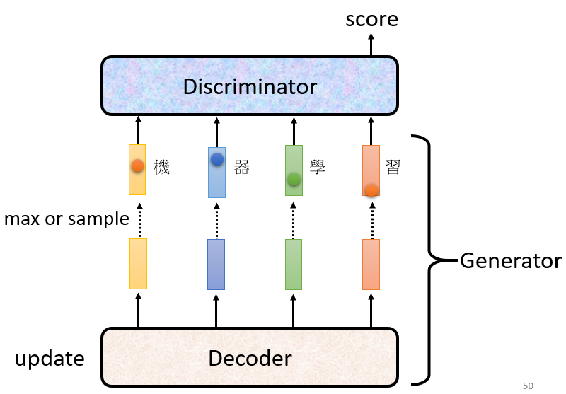
Discriminator 把这段文字读进去，去判断说这段文字是真正的文字，还是机器产生出来的文字，而 Decoder 就是想办法去骗过 Discriminator，Generator 就是想办法去骗过 Discriminator
你去调整你的这个 Generator 的参数，想办法让 Discriminator 觉得，Generator产生出来的东西是真正的
但是真正的的难点在于，你如果要用 Gradient Descent 去 Train 你的 Decoder，去让 Discriminator Output 分数越大越好，你会发现你做不到
大家知道，在用 Gradient Descent 方法中计算微分的时候，所谓的 Gradient，所谓的微分，其实就是某一个参数，它有变化的时候，对你的目标造成了多大的影响
我们现在来想想看，假设我们改变了 Decoder 的参数，也就是 Generator 的参数，有一点小小的变化的时候，到底对 Discriminator 的输出，有什么样的影响
如果Decoder 的参数有一点小小的变化，那它现在输出的这个 Distribution，也会有小小的变化，那因为这个变化很小，所以它不会影响最大的那一个 Token
Token，可能会觉得有点抽象，那如果你要想得更具体一点，Token 就是你现在在处理这个问题，处理产生这个 Sequence 的单位，那 Token ，是人定的了
- 假设我们今天，在产生一个中文的句子的时候，我们是每次产生一个 Character，一个方块字，那方块字就是我们的 Token
- 那假设你在处理英文的时候，你每次产生一个英文的字母，那字母就是你的 Token
- 假设你一次，是产生一个英文的词，英文的词和词之间，是以空白分开的，那就是词就是你的 Token
所以 Token 的定义，是你自己决定的，看你要拿什么样的东西，当做你产生一个句子的单位
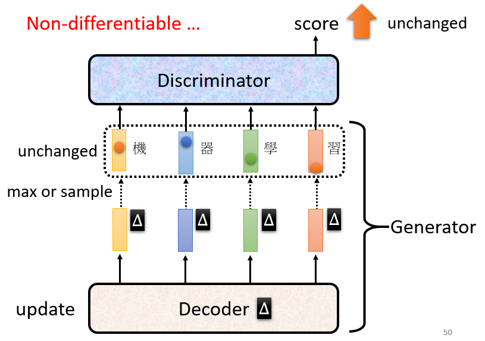
那今天，这个 Distribution 只有小小的变化，在取 Max 的时候，在找分数最大那个 Token 的时候，你会发现，分数最大的那个 Token是没有改变的，你 Distribution 只有小小的变化，所以分数最大的那个 Token 是同一个，那对 Discriminator 来说，它输出的分数是一模一样的，这样输出的分数就没有改变
所以你根本就没有办法算微分，你根本就没有办法做 Gradient Descent
有同学可能会说，欸 这个 这边不是 Max，是因为 Max 造成不能做 Gradient Descent 吗，那那个 CNN 里面不是有那个 Max Pooling 吗，那怎么还可以做 Gradient Descent？这个问题就留给你自己深思一下，为什么在这个地方，有 Max 不能做 Gradient Descent，而在CNN有 Max Pooling，却可以做 Gradient Descent
因为在做 Max Pooling 的时候我们知道元素导致了这个最大值，在做 back propagation 的时候只需要考虑这一个元素即可，其他元素置零，而对于 GAN 来说，我们是不知道哪个元素导致了“机器学习”这些字的输出的，中间存在一个 gap，比如一次训练一个字的概率是0.7，参数优化后概率变成了0.71，但是两次训练都是输出的这个字，对我们来说并没有变化，而如果是 Max Pooling，一次最大值是0.7，第二次是0.71，这是有变化的，我们只需要针对这个值计算梯度即可。
https://www.zhihu.com/question/455277726
但是就算是不能做 Gradient Descent，你也不用害怕，记不记得我们上周有讲说，遇到不能用 Gradient Descent Train 的问题，就当做 Reinforcement Learning 的问题，硬做一下就结束了，所以你确实可以用 Reinforcement Learning，来 Train 你的 Generator，在你要产生一个 Sequence 的时候，你可以用 Reinforcement Learning，来 Train 你的 Generator
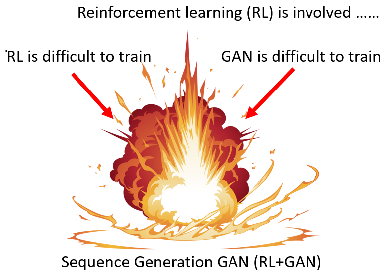
但Reinforcement Learning 是以难 Train 而闻名，GAN 也是以难 Train 而闻名，这样的东西加在一起，就大炸裂这样 Train 不起来，非常非常地难训练
所以要用 GAN 产生一段文字，过去一直被认为，是一个非常大的难题，所以有很长一段时间，没有人可以成功地把 Generator 训练起来产生文字，通常你需要先做 Pretrain，那 Pretrain 这件事情，其实我们等一下马上就会提到，如果你现在还不知道 Pretrain 是什么的话，也没有关系，总之过去你没有办法用正常的方法，让 GAN 产生一段文字
直到有一篇 Paper 叫做 ScrachGAN
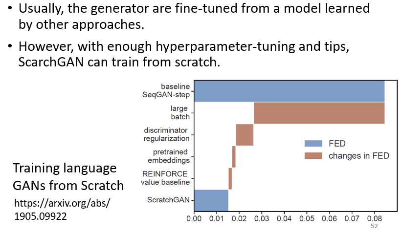
它的 Title 就开宗明义跟你炫耀说，它可以 Train Language GANs Form Scrach，Form Scrach 就是不用 Pretrain 的意思
它可以直接从随机的初始化参数开始Train 它的 Generator，然后让 Generator 可以产生文字，它最关键的就是爆调 Hyperparameter，跟一大堆的 Tips
比如说，这个横轴是它们的 Major，这个叫做 FED，那这个是用在文字上的，我们今天就不讲，这不重要，总之这个值越低越好
-
一开始要有一个叫做 SeqGAN-Step 的技术，没这个完全 Train 不起来
-
然后接下来有一个很大的 Batch Size，通常就是上千，没有那个，你自己在家没办法这么做的
-
Discriminator 加 Regularization，Embedding 要 Pretrain
-
改一下 Reinforcement Learning 的 Argument
-
最后就有 ScratchGAN，就可以从真的把 GAN Train起来，然后让它来产生 Sequence
那今天有关 GAN 的部分，我们只是讲了一个大概，那如果你想要学最完整的内容，我在这边留下一个连结给大家参考，
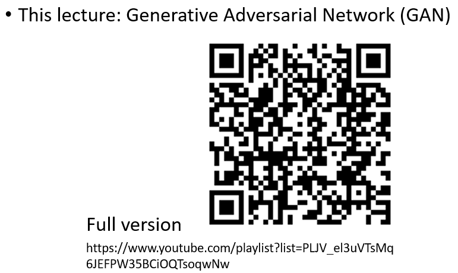
那其实有关 Generative 的 Model，不是只有 GAN 而已，还有其他的，比如说 VAE，比如说 FLOW-Based Model，那我在这边也列了两个影片的连结，给大家参考
强调一下就是，这边的影片连结并不是一定要看过这些影片连结，才能够学习接下来的内容，因为机器学习可以讲的东西实在太多了，所以如果，假设你没有太多的时间，那你唯一真正需要听的，上课讲的内容是 Self Content，它本身是 Consistent 的，你只要每一堂课都有听，你接下来的内容，你应该都可以依序听下去，应该都可以听懂
然后在上课中，会放一些影片的连结，这个就等于是额外分出去的分支，如果你真的很有兴趣的话，可以进行深入的研究
那为什么我们不再讲更多东西，因为在上课的设计，这个课程的内容，是以真正能够对你有帮助，以实务为导向的，就假设你想要 Train 一个 Generator，你想让机器可以产生东西，你有很多方法，你可以用 GAN，你可以 VAE，可以用 FLOW-Bases Model
我们这边就选择告诉你 GAN，所以以后，你如果有人叫你，Train 一个 Generative Model，你有办法去 Train 它，那你如果想要深入研究，你可以在研究 VAE 跟 FLOW-Bases Model，那有人可能会问说，为什么选择 GAN，为什么不是选择其他的 Model 一个最直接的理由是，GAN 的 Performance 是比较好的
如果你要产生非常好的图片的话，你还是今天要用 GAN，通常 VAE 或 FLOW-Bases Model，它们产生的结果，都是跟 GAN 有非常大的一段差距，它们通常都是 Plan 说，我经过了一番努力，暴调了一堆参，爆弄了一堆 Tips，最后可以跟 GAN 差不多而已，所以 GAN 通常，它产生出来的结果还是比较好的
那你可能会说，GAN 比较难 Train，这个比较 Train 吧，VAE 或 FLOW 会不会比较好 Train？
如果你真的有实做 VAE 或 FLOW 的话，它们没有比较好 Train 老实说，你可能会觉得说，从它的式子上看起来，GAN 很神祕，有一个 Discriminator Generator，它们要互动，然后像 FLOW-Bases Model VAE，它们都比较像是，直接 Train 一个一般的模型，它们有一个很明确的 Objective
但你实际上 Train 起来发现说，它们也没有那么容易成功地被训练起来，它们的 Objective 里面有很多项，它们的 Loss 里面有很多项，然后把每一项都平衡，才能够有好的结果，但要达成平衡也非常地困难，跟 GAN，我觉得 Train 的难度是不遑多让，所以我们这边就选择 GAN ，作为我们课堂上介绍的，生成式的 Generative 的 Model，那至于其他 Model，你可以再多多，如果你有兴趣，你可以再自己涉猎
也许有同学会想说，为什么我们要特别用一些，提出一些新的做法，来做 Generative 这件事？
如果我们今天的目标就是，输入一个 Gaussian 的 Random 的 Variable，输入一个 Gaussian，从 Gaussian 的这个 Random Variable，Sample 出来的 Vector，把它变成一张图片，那我们能不能够用，Supervised Learning 的方法来做？
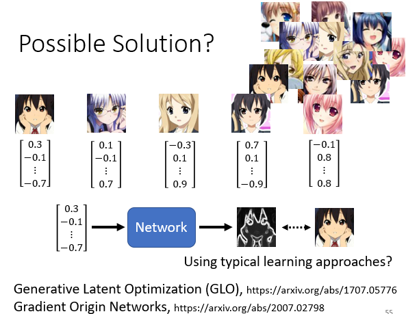
也就说我有一堆图片，我把这些图片拿出来，每一个图片都去配一个 Vector，都去配一个，从 Gaussian Distribution，Sample 出来的 Vector，接下来就当做 Supervised Learning 的方法，硬做就结束了，
这张图片就是对到这个 Vector，Train 一个 Network，输入一个 Vector，输出就是它对应的图片，把对应的图片当做你训练的目标，训练下去
真的有这样子的生成式的模型，那难的点是说，如果这边，纯粹放随机的向量，Train 起来结果会很差，你可能根本连 Train 都 Train 不起来，所以怎么办，你需要有一些特殊的方法，我在这边一样放两篇论文的连结
Generative Latent Optimization (GLO)， https://arxiv.org/abs/1707.05776
Gradient Origin Networks， https://arxiv.org/abs/2007.02798
Evaluation of Generation¶
我们现在产生出来的 Generator，它好或者是不好，那要评估一个 Generator 的好坏，并没有那么容易，那最直觉的做法，也许是找人来看，你要知道，今天这个 Generator 产生出来的图片，到底像不像动画的人物，那就找人直接来看，也许就结束了
其实很长一段时间，尤其是人们刚开始研究，Generative 这样的技术的时候，很长一段时间没有好的 measure，那时候要评估 Generator 的好坏，都是人眼看，然后直接用吹的这样
就说在 Paper 最后就放几张图说，你看这个，我觉得应该是比文献上，目前结果都还要好，太棒了，这应该是state of the art，然后就结束了这样子，所以发现比较早年的 GAN 的 Paper，它没有数字，整篇 Paper 里面没有 Accuracy，它就是放几张图片告诉你说，这个应该是比过去的文章都好，然后就结束了
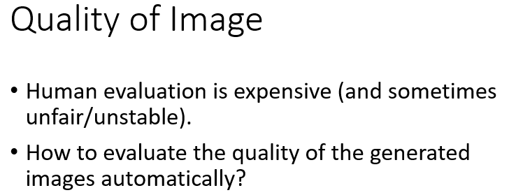
完全用人来看显然有很多的问题，比如说不客观、不稳定等等诸多的问题，所以有没有比较客观，而且自动的方法，来想办法量一个 Generator 的好坏，如果针对特定的一些任务，是有办法设计一些方法的，
如果是一般的 Case ，我随便训练了一个 Generator，它不一定是产生动画人物的，因为它产生别的，它专门产生猫，专门产生狗，专门产生斑马等等
那有一个方法，是一样跑一个影像的分类系统，把你的 GAN 产生出来的图片，丢到一个的影像的分类系统里面，看它产生什么样的结果
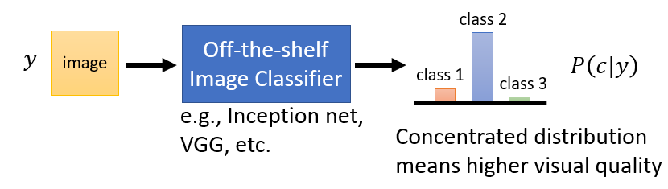
影像分类系统输入是一张图片，我们这边叫做 y，输出，是一个机率分布，我们这边叫它 P ( c│y )，P ( c│y ) 是一个机率的分布
然后接下来我们就看说，这个机率的分布如果越集中，就代表说现在产生的图片可能越好，虽然我们不知道这边产生的图片，里面有什么东西，不知道它是猫还是狗还是斑马，我们不知道它是什么，但是如果丢到了一个影像分类系统以后，它输出来的结果，它输出来的这个分布非常集中，代表影像分类系统，它非常肯定，它现在看到什么样的东西
它非常肯定它看到了狗，它非常肯定它看到了斑马，然后代表说，你产生出来的图片，也许是比较接近真实的图片，所以影像辨识系统才辨识得出来
如果你产生出来的图片是一个四不像，根本看不出是什么动物，那影像辨识系统就会非常地困惑，它产生出来的这个机率分布，就会非常地平坦，非常地平均分布，那如果是平均分布的话，那就代表说你的 GAN，产生出来的图片，可能是比较奇怪的，所以影像辨识系统才会辨识不出来
所以这个是靠影像辨识系统，来判断你产生出来的图片好坏，这是一个可能的做法
Diversity - Mode Collapse¶
但是光用这个评估的方法会被一个叫做 Mode Collapse 的问题骗过去，Mode Collapse 是说，你在 Train GAN 的时候，你有时候 Train 着 Train 着，就会遇到一个状况是
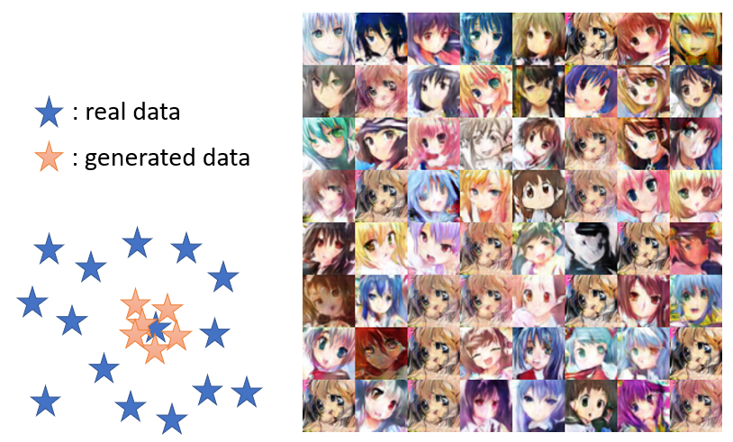
- 假设这些蓝色的星星，是真正的资料的分布
- 红色的星星是你的 GAN，你的 Generative 的 Model，它的分布
你会发现说 Generative Model，它输出来的图片来来去去，就是那几张，可能单一张拿出来，你觉得好像还做得不错，但让它多产生几张就露出马脚
那以下是一个 Mode Collapse 的例子啦，就是我们在这个上周有看到说，我就 Train 了一个 Generator，让它产生二次元的人物，那 Train 着 Train 着 Train 到最后，我就发现变成这样的一个状况，这一张脸越来越多
越来越多，而且它还有不同的发色，这个发色比较偏红，这个发色比较偏黄，越来越多，最后就通通都是这张脸，那这就是一种 Mode Collapse 的现象
那为什么会有 Mode Collapse，这种现象发生，就直觉上你还是比较容易理解，你可以想成说，这个地方就是 Discriminator 的一个盲点，当 Generator 学会产生这种图片以后，它 Discr，它就永远都可以骗过 Discriminator，Discriminator 没办法看出说，这样子的图片是假的，那这是一个 Discriminator 的盲点，Generator 抓到这个盲点就硬打一发，就发生 Mode Collapse 的状况
那可是到底要怎么避免Mode Collapse 的状况，我认为今天其实还没有一个非常好的解答，举例来说，我们在上周给大家看到了，BGAN 的结果，就是会产生网球狗那个结果，那是 Google 做的，它也爆搜了参数，但就算是它爆搜了参数，它发现最终，它仍然没有办法真的避免 Mode Collapse 的状况，就 BGAN Train 到最后还是 Mode Collapse
BGAN 那边 Paper 怎么解决这个问题，其实很简单，Model 在 Generator 在训练的时候，一路上都会把checkpoint 存下来，在 Mode Collapse 之前，把 Training 停下来，然后就把之前的 Model 拿出来用，就结束了这样，所以就算是强如 Google 爆搜参数，现在还是没有办法彻底解决，Mode Collapse 的问题
Diversity - Mode Dropping¶
但是有另外一种更难被侦测到的问题，叫做 Mode Dropping，Mode Dropping 的意思是说，你的真实的资料分布可能是这个样子，但是你的产生出来的资料，只有真实资料的一部分，单纯看产生出来的资料，你可能会觉得还不错，而且分布，它的这个多样性也够
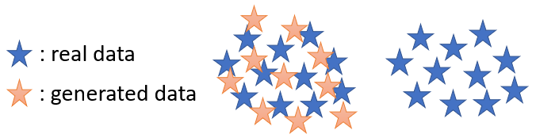
但你不知道说真实的资料，它的多样性的分布，其实是更大的，我这边举一个例子，好 那这边，是一个真实的例子，就有个同学，他 Train 了这个人脸生成的 GAN，那它在某一个 Iteration 的时候，它的 Generator 产生出这些人脸
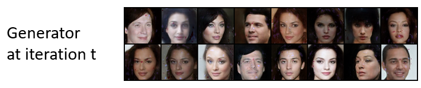
你会觉得说，没有问题，而且人脸的多样性也够，有男有女，有向左看，有向右看，各式各样的人脸都有，好 这个是第 T 个 Iteration 的时候 Generator，你也不觉得，它的多样性有问题，但如果你再看下一个 Iteration，Generator 产生出来的图片是这样子的
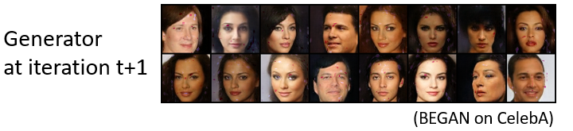
它的肤色有问题，所以它之前，你看有男有女没有问题，但是它肤色偏白，这边肤色偏黄，你没弄好人家都觉得，你的 Generator 有种族歧视
所以在这种 Mode Dropping 的问题是，不太容易被侦测出来的，事实上今天到底，今天这些非常好的 GAN，BGAN，Progress GAN，BGAN，Progress GAN，可以产生非常真实人脸这些 GAN，到底有没有 Mode Dropping 的问题，可能还是有的
如果你看多了，GAN 产生出来的人脸，你会发现说，虽然非常真实，但好像来来去去，就是那么几张脸而已，它有一个非常独特的特征是，你看多了以后就觉得，这个脸好像是被生成出来的，所以今天也许 Mode Dropping 的问题，都还没有获得本质上的解决
但是我们会需要去量说，现在我们的 Generator，它产生出来的图片，到底多样性够不够
过去有一个做法，一样是借助我们的 Image Classifier，你就把一堆图片，就很像你的 Generator 产生 1000 张图片，把这 1000 张图片里，都丢到 Image Classify 里面，看它被判断成哪一个 Class
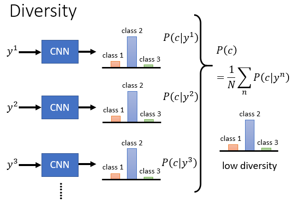
每张图片，都会给我们一个 Distribution，你把所有的 Distribution 平均起来，接下来看看平均的 Distribution 长什么样子
如果平均的 Distribution 非常集中，就代表现在多样性不够，如果什么图片丢进去，你的影像分类系统都说，是看到 Class 2，看到里面有 Class 2 这样的东西，那代表说，每一张图片也许都蛮像的，你的多样性是不够的
那如果另外一个 Case，不同张图片丢进去，不同张，你的 Generator 产生出来的图片，丢到 Image Classifier 的时候，它产生出来的输出的分布，都非常地不同
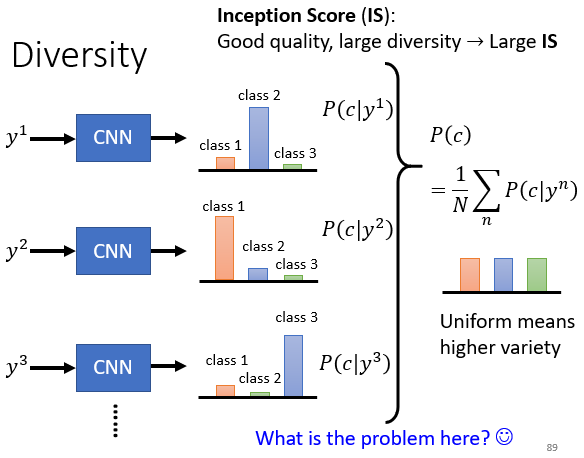
你平均完以后发现，平均完后的结果是非常平坦的，那这个时候代表什么，这个时候代表说，也许你的多样性是足够的，那你会发现说在评估的标准上
当我们用这个 Image 的 Classifier，来做评估的时候，Diversity 跟 Quality 好像是有点互斥的，因为我们刚才在讲 Quality 的时候，我们说越集中代表 Quality 越高，但是 Diversity 分布越平均，代表 Diversity 越大
强调一下这个 Quality 跟 Diversity，它们评估的范围不一样
- Quality 是只看一张图片，一张图片丢到 Classifier 的时候，分布有没有非常地集中
- 而 Diversity 看的是一堆图片，它分布的平均，一堆图片你的 Image Classifier ，如果输出的平均越平均的话，就代表说现在的 Diversity 越大
那过去有一个非常常被使用的分数，叫做 Inception Score，那它的缩写是 IS，所谓 Inception Score，顾名思义就是这边用的这个基于CNN的 Inception 模型来做的，所以叫 Inception Score
用 Inception Network 量一下 Quality，如果 Quality 高，那个 Diversity 又大，那 Inception Score 就会比较大
Fréchet Inception Distance (FID)¶
在我们的作业中，会采取另外一个 Evaluation 的 Measure，叫 Fréchet Inception Distance，它的缩写叫做 FID，这个东西是什么，你先把你产生出来的二次元的人物，丢到 Inception Net 里面
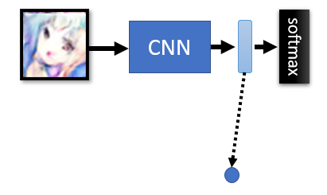
把这个二次元人物一路丢到最后，让那个 Inception Network 输出它的类别，那你得到的可能就是人脸，那每一张二次元的人物看起来都是人脸，那我们不要拿那个类别
我们拿进入 Softmax 之前的 Hidden Layer 的输出，进入 Softmax 之前，你的 Network 会产生一个向量，那可能是长度是上千维的一个向量，把那个向量拿出来，代表这张图片
那如果我们拿出来的是一个向量，而不是最后的类别，那虽然最后分类的类别可能是一样的，但是在决定最后的类别之前，这个向量就算都是人脸，可能还是不一样的，可能会随着肤色 发型，这个向量还是会有所改变的，所以我们就不取最后的类别，只取这个 Inception Network 中间的，其实是最后一层的这个 Hidden Layer 的输出，来代表一张图片
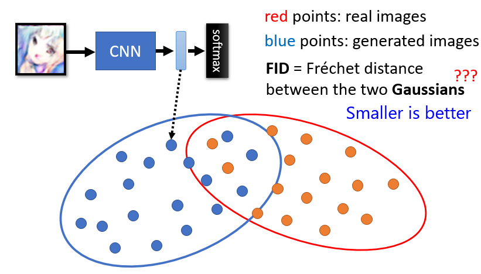
所有红色的点，代表你把真正的图片，丢到 Inception Network 以后，拿出来的向量，那这个向量其实非常高维度，是上千维的，我们就把它假设，我们可以把它画在二维的平面上，
蓝色的点是你自己的 GAN，你自己的 Generator，产生出来的图片，它丢到 Inception Network 以后，进入 Softmax 之前的向量，把它画出来，假设是长这个样子
接下来，假设真实的图片跟产生出来的图片它们都是 Gaussians 的 Distribution，然后去计算这两个 Gaussians Distribution 之间的==Fréchet Distance==，就结束了
那至于 Fréchet 的 Distance 是什么，你有兴趣再自己看一下文献，反正在作业里面，我们的 Judge Systerm 会帮大家算好
因为它是一个 Distance，所以这个值就是越小越好，距离越小，代表这两组图片越接近，那当然就是产生出来的品质越高
但这边你一定心里还是有很多问号
-
第一个问号就是，当做 Gaussians Distribution 没问题吗，这个应该不是 Gaussians Distribution吧？会有问题！
-
然后另外一个问题就是，如果你要准确的得到你的 Network 它的分布，那你可能需要产生大量的 Sample 才能做到，那这需要一点运算量，那这个也是要做 FID 不可避免的问题
所以其实我们在作业里面，我们不会只看，我们也不会只看 FID，只看 FID，其实结果会怪怪的。因为你假设你的这个输出的分布一定是 Gaussians ，那它实际上不是 Gaussians，硬假设它是 Gaussians，会怪怪的，所以我们是同时看 FID，跟动画人物人脸的这个，侦测出来的人脸的数目，这两个指标，我会同时看这两个指标，那这样可以得到比较合理而精确的结果
FID 算是今天比较常用的一种 Measure，那有一篇 Paper 叫做，Are GANs Created Equal，A Large Scale Study
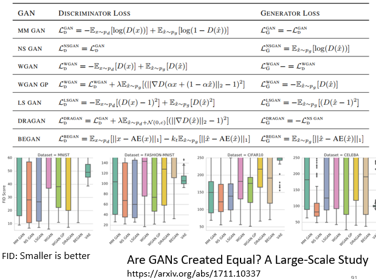
那你可以想见说这个也是 Google 做的啦，那就是爆做了各式各样不同的 GAN，有那个时候它就列举了好多不同的，各式各样的 GAN，那每一个 GAN，当然它的这个训练的这个 Objective，训练的那个 Loss 有点不太一样，我这边就不细讲，各式各样的 GAN，每一种 GAN，它都用不同的 Random Seed，去跑过很多次以后，看看结果怎么样
上面这个图，就是在四个不同的资料库上面得到的结果
横轴这边代表的是不同的 GAN，那这边的值FID，是越小越好
你会发现说，这边每一个方法，它都不是只得到一个数值，它都得到一个分布，为什么它得到是一个分布，因为你要用那个不同的 Random Seed 去跑，每次跑出来的结果都不太一样，那这边混了一个不是 GAN 的做法，混了一个 VAE 在这里
那你会发现说，如果比较这些 GAN 的方法跟 VAE 的方法，VAE 的方法显然是比较稳定的，不同的 Random Seed，看起来差距还是比较小的，那 GAN 的方法，不同 Random Seed 差距是很大的，那你又可以很明显地看出，VAE 跟 GAN，它的这个好的程度，不在同一个量级上，GAN可以产生远比 VAE 更好的结果
不过你会发现说不同的 GAN好像结果差不多，所以这边就，那抬头就是 Are GANs Created Equal，然后看起来所有的 GAN 都差不多，
如果你仔细看那篇文章的话，在做实验的时候，所有这些不同的 GAN 用的 Network 架构都是同一个，它只是爆搜了那个 Random Seed 跟 Learning Rate 而已，所以 Network 架构还是同一个
所以我们不知道是不是有某些 Network 架构，特别 Favor 某些种类的 GAN，或者是某些种类的 GAN，会不会在不同的 Network 架构上，表现得比较比较稳定，比如说如果你看 WGAN 的话，WGAN 最原始的 Paper，它标榜的其实是它 Network 架构胡乱设计，它胡乱兜个什么 100 层的 Generator，就很没有必要弄一个 100 层的 Generator，它也 Train 得起来，所以也许 WGAN 是在不同的 Generator，不同的 Network 架构的时候比较稳定，那你试不同的 Random Seed，可能没有特别稳定等等之类的，不知道，这篇 Paper 并没有给我们这方面的答案
We don’t want memory GAN.¶
那其实刚才那些 Measure 也完全，也并没有完全解决 GAN 的Evaluation 的问题
你想想看以下的状况，假设这是你的真实资料
你不知道怎么回事，训练了一个 Generator，它产生出来的 Data，跟你的真实资料一模一样
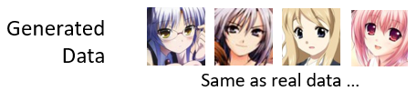
所以如果你不知道真实资料长什么样子，你光看这个 Generator 的输出，你会觉得太棒了，它做得很棒，那 FID 算出来，一定是非常小的
但问题是这个是你要的吗，如果它产生出来的图片都跟资料库里面的，训练资料的一模一样，训练资料就在你手上，直接从训练资料里面，Sample 一些 Image 出来不是更好，干嘛要 Train Generator
我们 Train Generator 其实是希望它产生，新的图片，训练资料里面没有的人脸，如果训练资料里面有一模一样的人脸，直接用训练资料里面的人脸就好了，何必用 GAN ，所以有时候你的 GAN 产生出来的结果很好，也许你在作业里面，FID 算出来也很低，然后人脸辨识系统也给你很高的分数，但是它不一定是一个好的 GAN
你可能会说，那我们就把，我们 Generator 产生出来的图片，跟真实资料比个相似度吧，看看是不是一样嘛，如果很多张都一样就代表说，Generator 只是把那个训练资料背起来而已，它没有很厉害
但是那如果我问另外一个问题，假设你的 Generator 学到的是，把所有训练资料里面的图片都左右反转，那它也是什么事都没有做
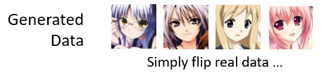
假设它学到就是，把训练资料里面所有的图片都左右翻转，那你会觉得，嗯 它看起来很棒，它实际上也是什么事都没有做，但问题是你比相似度的时候，又比不出来，所以 GAN 的 Evaluation是非常地困难的，还甚至 光要如何评估，一个 Generator 做得好不好这件事情，都是一个可以研究的题目
如果你真的很有兴趣的话，这边放了一篇相关的文章啦https://arxiv.org/abs/1802.03446，里面就列举了二十几种，GAN Generator 的评估的方式
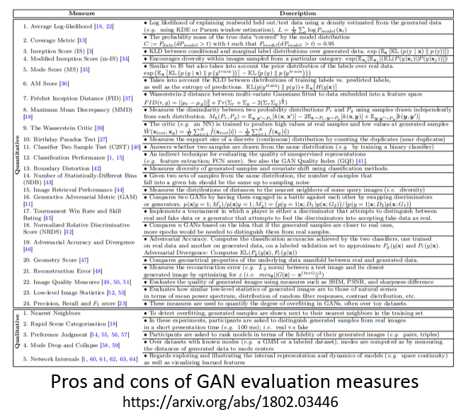
Conditional Generation¶
什么是 Conditional 的 Generation？
刚才我们讲的那个 Generator，到目前为止我们讲的 Generator，它输入都是一个随机的分布而已，那这个不见得非常有用
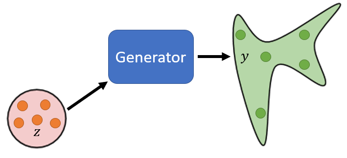
我们现在想要更进一步的是，我们可以操控 Generator 的输出，我们给它一个 Condition x，让它根据 x 跟 z 来产生 y，那这样的 Conditional Generation
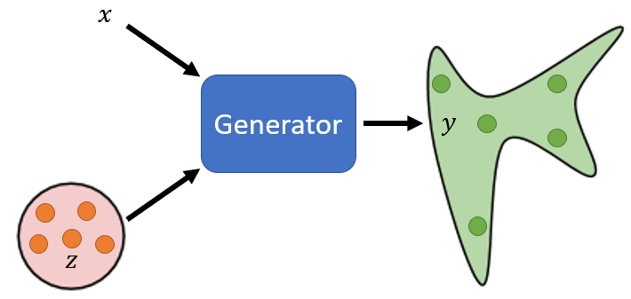
有什么样的应用，比如说你可以做文字对图片的生成
那如果你要做文字对图片的生成，它其实是一个 Supervised Learning 的问题，你需要一些 Label 的 Data，你需要去搜集一些图片，搜集一些人脸，然后这些人脸都要有文字的描述，告诉我们说，这个是红眼睛，这个是黑头发，这个是黄头发，这个是有黑眼圈等等，告诉我们这样子，我们要这样的 Label 的资料，才能够训练这种 Conditional 的 Generation
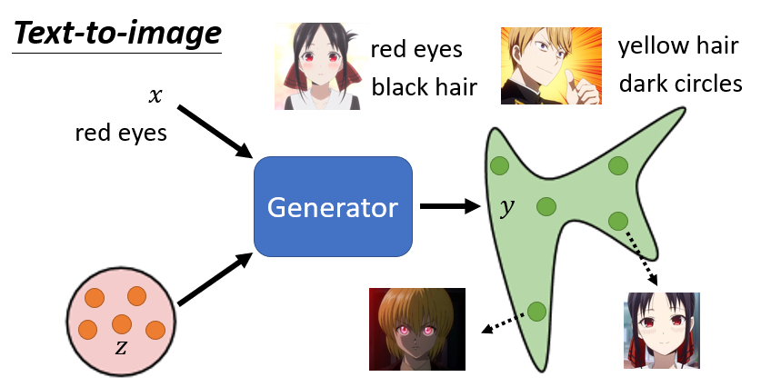
所以在 Text To Image 这样的任务里面，我们的 x 就是一段文字，那你可能问说，一段文字怎么输入给 Generator ，那就要问你自己了，你要怎么做都可以
以前会用 RNN 把它读过去，然后得到一个向量，再丢到 Generator，今天也许你可以把它丢到一个 Transformer 的 Encoder 里面去，把 Encoder Output 这些向量通通平均起来，丢到 Generator 里面去，怎么样都可以 反正，你用什么方法都可以，只要能够让 Generator 读一段文字就行
那你期待说你输入 Red Eyes，然后，机器就可以画一个红眼睛的角色，但每次画出来的角色都不一样，那这个画出来什么样的角色，取决于什么，取决于你 Sample 到什么样的 z，Sample 到不一样的 z，画出来的角色就不同，但是通通都是红眼睛的，这个就是 Text To Image 想要做的事情
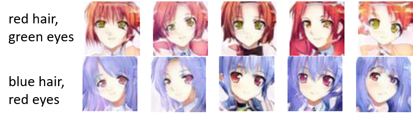
这学期虽然没有，但过去有这个作业，就是输入红头发，这个是之前助教做的结果，输入红头发，输入绿眼睛，那产生的结果就是这个样子，产生各式各样红头发 绿眼睛的角色，输入蓝头发 红眼睛，就产生各式各样蓝头发 红眼睛的角色，你发现，那个有时候机器也是会犯错的啦，比如说这边有一个异色瞳，虽然说要画红眼睛，但它觉得画一双红色的眼睛就可以矇混过去，另外一双眼睛仍然是蓝色的
我们现在的 Generator 有两个输入，一个是从 Normal Distribution，Sample 出来的 z，另外一个是 x，也就是一段文字
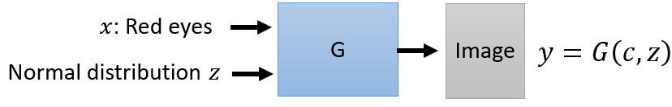
那我们的 Generator 会产生一张图片 y，那我们需要一个 Discriminator，那如果按照我们过去所学过的东西，Discriminator，它就是吃一张图片 y 当作输入，输出一个数值，这个数值代表输入的图片，多像真实的图片
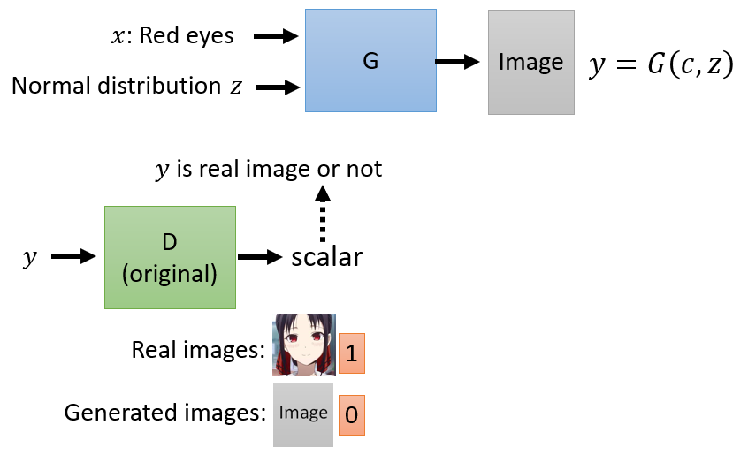
是真实的，还是生成的，那怎么训练这个 Discriminator ，你就说如果看到真实的图片，你就输出 1，如果看到生成的图片，就输出 0，你就可以训练 Discriminator，然后 Discriminator 跟 Generator 反复训练
也许你就可以去把 Generator 训练出来，但这样的方法，没办法真的解 Conditional GAN 的问题，为什么，因为如果我们只有 Train 这个 Discriminator，这个 Discriminator 只会看 y 当做输入的话，那 Generator 会学到的是，它会产生可以骗过 Discriminator 的非常清晰的图片
它会产生清晰的图片，但是跟输入完全没有任何关系，因为对 Generator 来说，它只要产生清晰的图片，就可以骗过 Discriminator 了，它何必要去管 Input 文字叙述是什么
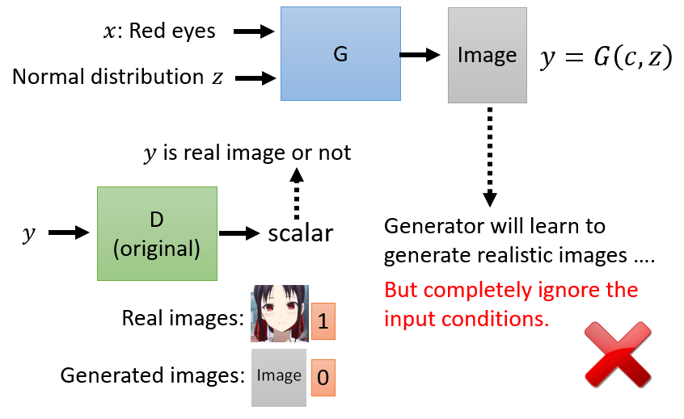
你的 Discriminator 又不看文字的叙述，所以它根本就不需要管文字的叙述，你不管输入什么文字，就无视这个 x，反正就是产生一个图片，可以骗过 Discriminator 就结束了，但这显然不是我们要的
所以在 Conditional GAN 里面，你要做有点不一样的设计，你的 Discriminator 不是只吃图片 y，它还要吃 Condition x
所以你的 Discriminator，它有 y 作为输入，有 x 作为输入，然后产生一个数值，那这个数值不只是看 y 好不好，光图片好，没有用，光图片好，Discriminator 还是不会给高分
Discriminator 给高分的时候，一方面图片要好，另外一方面，这个图片跟文字的叙述必须要是相配的，Discriminator 才会给高分
那怎么样训练这样的 Discriminator ？
那你需要文字跟影像成对的资料，所以 Conditional GAN，一般的训练，是需要这个 Pair 的 Data 的，是需要有标注的资料的，是需要成对资料的
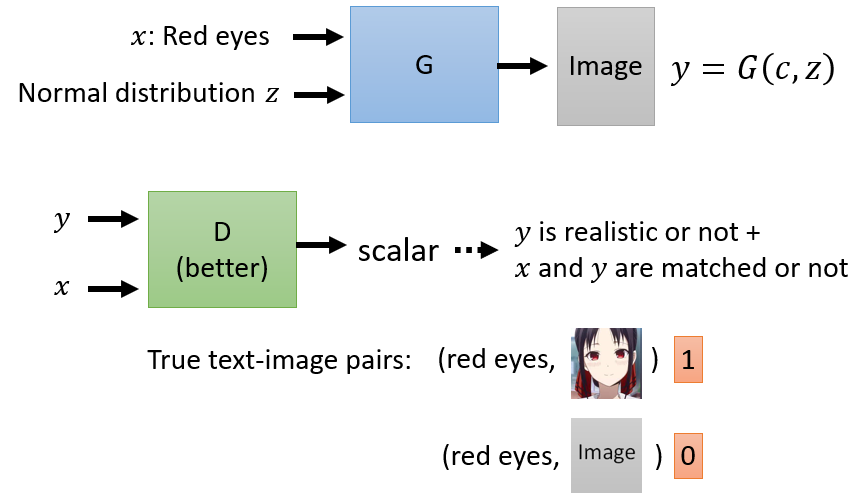
有这些成对资料，那你就告诉你的 Discriminator 说，看到这些真正的成对的资料，就给它一分，看到 Red Eyes，但是搭配，可能 Red Eyes 跟机器产生出来的图片，那就是给 0 分，然后训练下去，就可以产生，就可以做到 Conditional GAN，
那其实在实作上，光是这样子，拿这样子的 Positive Sample，还有 Negative Sample，来训练这样的 Discriminator，其实你得到的结果往往不够好，光是告诉 Discriminator 说，这样子的状况是好的，这样子的状况是不好的，这样是不够的
你还需要加上一种不好的状况是，已经产生好的图片，但是文字叙述配不上的状况
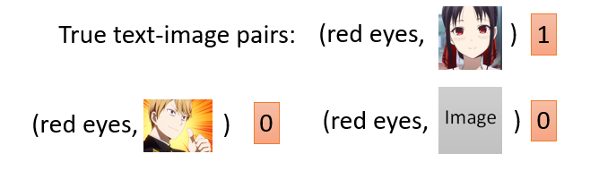
所以你通常会把你的训练资料拿出来，然后故意把文字跟图片乱配，故意配一些错的，然后告诉你的 Discriminator 说，看到这种状况，你也要说是不好的，用这样子的资料，你才有办法把 Discriminator 训练好，然后 Generator 跟 Discriminator，反复的训练，你最后才会得到好的结果，这个就是 Conditional GAN
在目前的例子里面都是，看一段文字产生图片，那 Conditional GAN 的应用，不只看一段文字产生图片啦，也可以看一张图片，产生图片
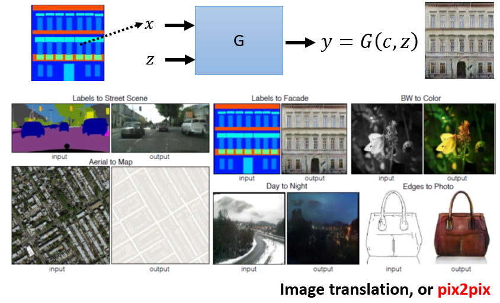
那看一张图片产生图片，也有很多的应用，比如说
- 给它房屋的设计图，然后让你的 Generator 直接把房屋产生出来
- 给它黑白的图片，然后让它把颜色着上
- 给它这个素描的图，让它把它变成实景 实物
- 那给它这个白天的图片，让它变成晚上的图片
- 有时候你会给它，比如说起雾的图片，让它变成没有雾的图片，把雾去掉
所以 Conditional GAN，除了输入文字产生影像以外，也可以输入影像产生影像，那像这样子的应用，叫做 Image Translation，那有人又叫做 Pix2pix，这个 Pix 就是 Pixel，就是像素的缩写啦，所以叫做 Pix2pix
实现以上效果跟刚才讲的从文字产生影像，没有什么不同，现在只是从影像产生影像，把文字的部分用影像取代掉而已，那当然同样的做法，同样要产生这样的 Generator，产生一张图片，输入一张图片 产生一张图片，你当然可以用 Supervised Learning的方法
在文献上你会发现说，如果你用 Supervised Learning 的方法，你得不到非常好的结果，通常你用 Supervised Learning 的方法，训练一个图片生图片的 Generator，你产生出来的结果可能是这个样子
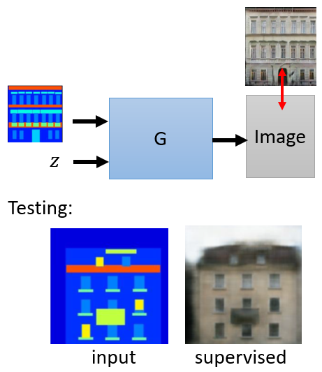
就是这是你的 Generator 的输入，那这个是你 Generator 的输出，那你会发现说它非常地模糊，为什么它非常地模糊，你可以直觉想成说，因为同样的输入，可能对应到不一样的输出，就好像我们在讲 GAN 刚开始的，开场的时候讲的那个例子，今天在同一个转角，那个小精灵可能左转，也可能右转，最后学到的，就是同时左转跟右转
那对于 Image To Image 的 Case，也是一样的，输入一张图片，输出有不同的可能，机器学到的，Generator 学到的，就是把不同的可能平均起来，结果变成一个模糊的结果
所以这个时候我们需要用 GAN 来 Train，你需要加一个 Discriminator，Discriminator 它是输入一张图片，还有输入 Condition，然后它会同时看这个图片跟这个 Condition，有没有匹配，来决定它的输出，那这个是文献上用 GAN 的输出，从右上角这篇 Paper 截取出来的
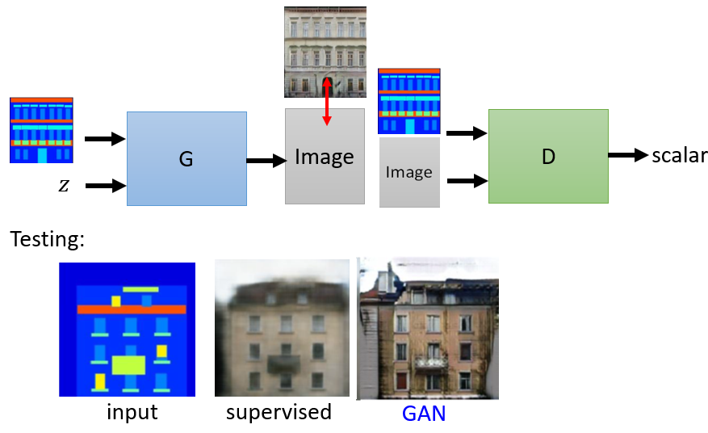
那你会发现说，如果单纯用 GAN 的话，它有一个小问题，所以它产生出来的图片，比较真实，但是它的问题是它的创造力，想象力过度丰富，它会产生一些输入没有的东西，没有叫它输入的东西，举例来说，这是一个房子，左上角明明没有其他东西，这边它却在屋顶上，加了一个不知道是烟囱还是窗户的东西
那文献上如果你要做到最好，往往就是 GAN 跟 Supervised Learning，同时使用
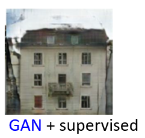
那同时使用，往往可以给你最好的结果，那所谓同时使用的意思就是，Generator 在训练的时候，一方面它要去骗过 Discriminator，这是它的一个目标，但同时它又想要产生一张图片，跟标准答案越像越好，它同时去做这两件事，那往往产生出来的结果是最好的
Conditional GAN 还有很多应用啦，这边给大家看一个莫名其妙的应用，就是给 GAN ，听一段声音，然后它产生一个对应的图片啦
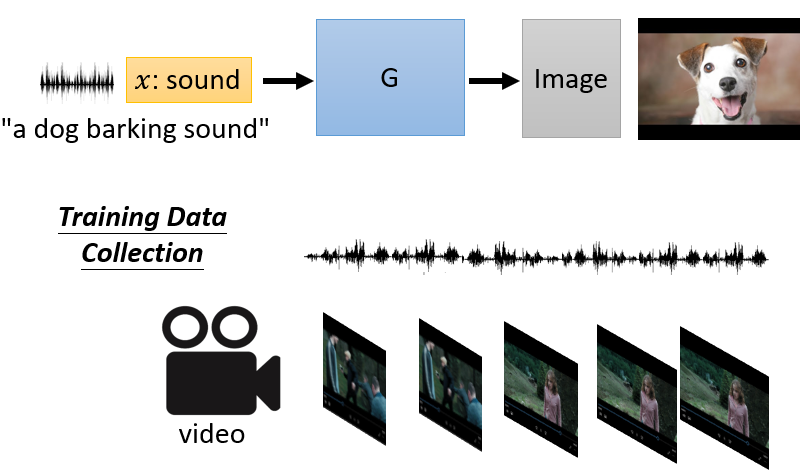
比如说给它听一段狗叫声，看它能不能够画出一双狗啦，好 那我刚才讲说 Conditional GAN 需要这个，Label 的资料，需要成对的资料
那这个声音跟影像成对的资料，其实并没有那么难搜集，因为你可以爬到大量的影片，那影片里面有影像 有画面，也有声音讯号，那你就知道说，这一个画面 这一帧，这一帧的图片，这一帧的画面，对应到这一小段声音，这一帧的画面对应到这一小段声音，把这些资料搜集起来，你就可以 Train 一个 Conditional GAN
那这个是我们实验室有个同学做的，这个是一个那个真正的 Demo
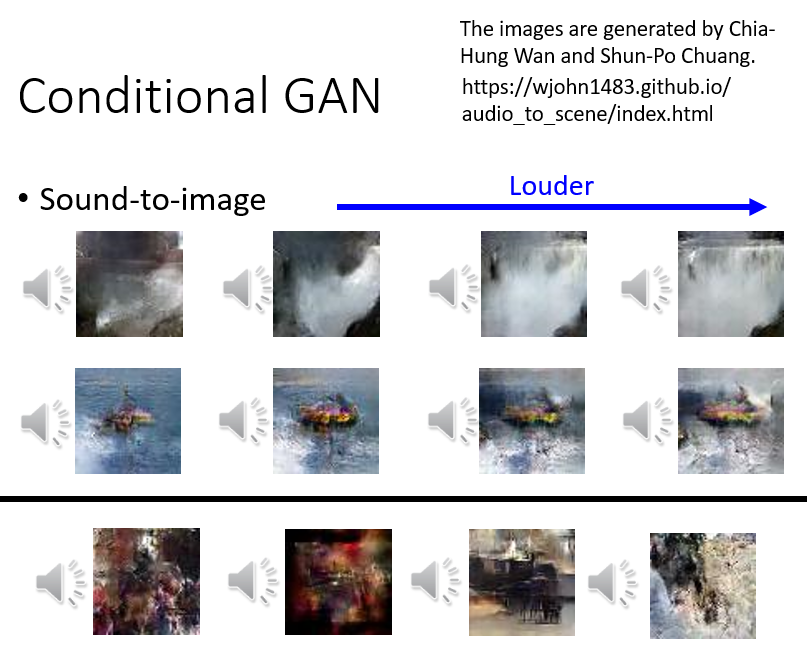
那机器听这样的声音，好 这听起来有点像是这个电视机坏掉的声音，那机器觉得它听到什么，刚才那一段声音机器觉得，它听到一个小溪，听到一个小瀑布
或者是我们再听另外一段声音，机器觉得它听到一艘快艇在海上奔驰
当然我有点担心说，欸 这个会不会机器并没有真的学到，声音跟图片之间的关系，会不会它只是把，它在训练资料里面有看过的图片存起来而已，所以我决定把声音调大，你听看看结果会怎样，所以我们把声音调大，接下来真的很大声哦，好 然后声音越来越大，你就发现说，这个溪流里面的水花就越来越多，从一条小溪，变成尼加拉瓜瀑布
然后刚才的这个快艇的例子也是一样，就把快艇的声音变大，你听看看会怎样，当声音越来越大的时候，你发现快艇旁边的水花就越来越多，好像快艇开得越来越快
不过我要承认，这个其实是稍微 Cherry Pick 的结果，就稍微挑过的结果，很多时候觉得 Generator 产生出来的东西，就是这个样子啦，不知所云这样，这就给它一个钢琴声，然后它好像想画一个钢琴，但又没有很清楚，这个是给它听狗叫声啦，好像想画一个动物，但又不知道要画些什么，这个是声音到影像的产生，好 那我看到最近最惊人的，Conditional GAN 的应用，是有人用 Conditional GAN 产生会动的图片
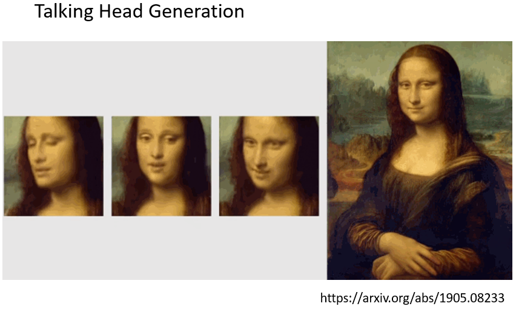
我们知道在哈利波特里面，那些人物的画像是会动的，是会说话的，那 Samsung ，就做了一个类似的应用，用 GAN 做的，给它一张图片，比如说蒙娜丽莎的画像，然后就可以让蒙娜丽莎开始讲话，这个是 Conditional GAN 的其中一个应用，我把论文放在这边给大家参考